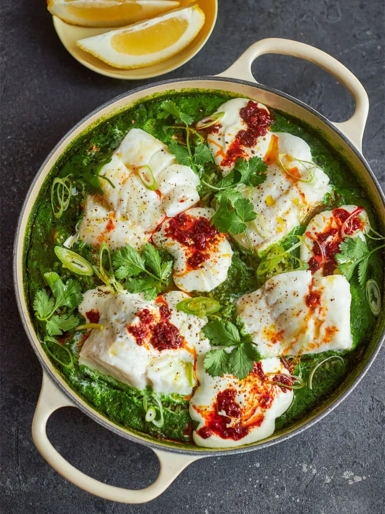

One-pan herby green rice & fish

One-pan herby green rice & fish with harissa-rippled
yoghurt & lemon
Turn regular rice into something extraordinary and exciting with
this joyful one-pan dish. Now, I want you to think of this
recipe as more of a principle – it’s fairly flexible and can be
taken in lots of different directions. Jazz it up with your
favourite seafood, mix up the greens you choose or throw in some
additional vegetables – whatever you fancy. For me, this makes
the perfect midweek meal – fresh, tasty, ready in 15-minutes
flat, and with minimal washing up. Yes please!
Serves 4. Cooks in 15 mins.
Super easy.
Ingredients
- 1.1 litres (2 pints) organic stock (chicken, fish or
vegetable, as appropriate)
- 8 spring onions
- 2 cloves of garlic
- 1 bunch of fresh corriander (30g)
- 100g baby spinach
- 1 mug of basmati rice (300g)
- 4 x 150g white fish fillets, such as cod, haddock, pollock,
megrim, skin off, pin-boned , from sustainable sources
- olive oil
- 4 tablespoons natural yoghurt
- 2 teaspoons harissa
- optional: 1/2 a fresh red chilli
- 1 lemon
Steps
- Trim 8 spring onions (put one aside for later), peel 2 cloves
of garlic and pick the leaves from 1 bunch of fresh coriander
(30g), reserving a few to garnish, then place in a blender.
- Add 100g of baby spinach, along with 2 mugs (600ml) of water
and blitz until smooth – you may need to work in batches.
- Tip 1 mug of rice (300g) into a large shallow casserole pan,
pour over the green sauce, mix well and cook on a high heat
uncovered for 5 minutes.
- Give the rice a good stir, then carefully place 4 x 150g
white fish fillets on top. Season to taste with sea salt and
black pepper, drizzle with 1 tablespoon of olive oil, then
cover with a lid, reduce the heat to low and cook gently for
a further 5 to 7 minutes, or until the rice is fluffy and
fragrant and the fish is pearly white and flaking.
- Dollop 4 tablespoons of natural yoghurt into a bowl, ripple
through 2 teaspoons of harissa and drizzle lightly with
olive oil.
- Finely slice the remaining spring onion and ½ a fresh red
chilli (if using), then scatter over the top along with the
reserved coriander leaves. Cut 1 lemon into wedges for
squeezing over, then serve along with the harissa yoghurt.
Delicious with a crunchy green salad.
Nutritional Information
- Calories - 378
- Fat - 10g
- Saturates - 1.7g
- Sugars - 2.5g
- Salt - 0.8g
- Protein - 25.5g
- Carbs - 45.5g
- Fibre - 1.1g